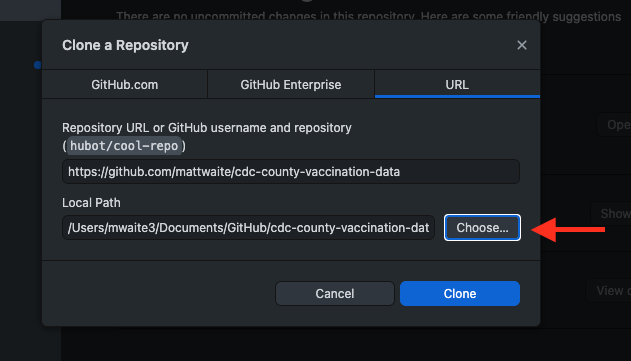
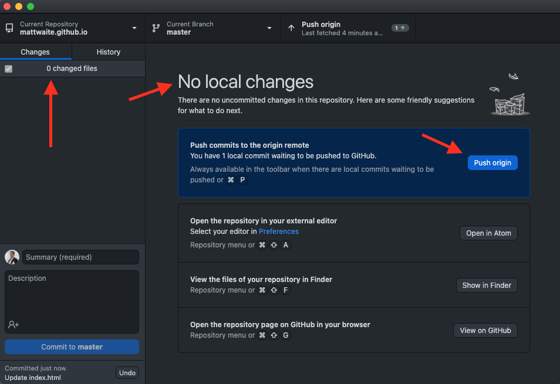

install.packages('blogdown') 37 Building your own blog with blogdown
If you listen to the Measurables Podcast for about two episodes, you’ll detect a pattern. The host asks each guest how they got started in sports analytics. To a one, they’ll say they found public data and started blogging about their analysis of it. For nearly every single guest, this is their path into the field. They started messing around with data in a toolset, found something interesting and wrote a post about what they found and how they found it. Other analysts noticed it, or a hiring manager liked what they read, and the rest is history, as they say.
So, let’s do that. Let’s get you a blog so you can post your work.
Here’s our requirements:
- This doesn’t cost you anything.
- There’s zero maintenance work or upkeep. No servers to manage. No account to pay for.
- Since you’re going to be writing about your code, you should be able to create your blog posts in R Studio.
37.1 Setup
With those requirements in mind, we’re going to use a library called Blogdown, which creates blog posts from R Markdown files, similar to what you’ve been working with in this book.
It installs how you think it should. Go into the console and run this:
After that, run this:
blogdown::install_hugo()After that, we’re ready to start making a blog. To do that, go to File > New Project and select New Directory (or Version Control if you know what you’re doing).

In the Project Type view, you may have to scroll down to find “Website using blogdown” but that’s your choice. Mine will probably look different than yours, but below is what the line you’re looking for looks like.
And now we’ve come to our first decision point.
First, name the directory you’re going to put this into. Keep it simple. Blog is fine. Then decide where on your computer you’re going to put it. Put it somewhere you’re going to remember. Don’t put it on your Desktop. Put it in a folder. Remember what folder because you’re going to need this later.
Now for the big decision: What theme to use. There’s four choices, but the default theme is the most fully documented. If you want to use another theme, you’ll be better off creating two projects: the one you’re going to publish, and the lithium theme you can steal stuff from.
Here’s the easiest themes to work with:

When you hit Create Project, you should get an R Studio screen. You might have a file open called config.yaml. If you don’t, open it (you can use the files pane in the bottom right). This file will look different depending on which theme you used. This configuration file needs to have a few things in it. This is the config.yaml for my website, but you should use it as a guide for what yours will need:
baseurl: http://mattwaite.github.io/
languageCode: en-us
title: Matt Waite's GitHub Site
theme: hugo-lithium
googleAnalytics: ''
disqusShortname: ''
ignoreFiles:
- \.Rmd$
- \.Rmarkdown$
- _cache$
- \.knit\.md$
- \.utf8\.md$
permalinks:
post: /:year/:month/:day/:slug/
menu:
main:
- name: About
url: /about/
- name: GitHub
url: https://github.com/mattwaite
- name: Twitter
url: https://twitter.com/mattwaite
params:
MathJaxCDN: //cdnjs.cloudflare.com/ajax/libs
MathJaxVersion: 2.7.5
description: Tools and teaching materials made by Matt Waite of the University of Nebraska-Lincoln
favicon: favicon.ico
highlightjsCDN: //cdnjs.cloudflare.com/ajax/libs
highlightjsLang:
- r
- yaml
highlightjsTheme: GitHub
highlightjsVersion: 9.12.0
logo:
alt: Logo
height: 50
url: logo.png
width: 50The top parts are generally filled in regardless of the theme. You’ll obviously want to change the base url and the title. For Google Analytics, you’ll add your tracking id there if and when you want to set that up. Leave ignorefiles and permalinks alone. For your menu – that is up to you. If someone wanting to hire you came across your site, what would you include here? Another thing to change? The description. It will be the text that appears below the name in Google.
37.2 Seeing your site
While you are creating your site, you’re going to want to see it. Now’s a good time to introduce serving your site in R Studio so you can see it before you deploy it.
In the console, type this: blogdown:: serve_site() or you can go to Addins > Serve Site.
Now, in the viewer tab on the right, you should see your site.

37.3 Editing existing Markdown content
There’s two types of files you can work with – plain Markdown files or R Markdown files. Plain Markdown are generally pages without code. R Markdown are the ones with the code.
Let’s start with a simple Markdown file – the homepage of the site. To edit files, use the Files tab. All of the material you’ll be editing is in the content folder.

Let’s start with editing the about.md file. Some templates also have a _index.md file, which is the static part of the homepage.
At the top, you will have something called a yaml header, which are things that set up the page. They are quite simple to figure out. Here’s the yaml header the Ivy theme generates. Obviously, I need to change the author, the date and the title for my site.
---
author: Yihui Xie
date: "2017-08-06"
title: About Hugo Ivy
---Change yours, then change the text below the yaml header, and then save it. Click on the Viewer tab and check out your work.
37.4 Creating a new post in R Markdown
You’ll notice in your content folder that there is a folder called post, and in there are multiple posts. Depending on your theme, you might just have folders in post, and you might have some markdown files. They work mostly the same way.
The magic here is how you name them. You’ll remember from config.yaml that we have a post url format that goes post / year / month / day / slug. The reason for that is that urls matter for Google. Clean urls with meaningful information in them rank higher.
So in post, you’ll see the folders are named similarly – a date separated by dashes followed by a slug – the headline of your post in all lower case with dashes instead of spaces. So if I were writing a post called “I love sports data”, the slug version of that would be i-love-sports-data. If I were writing it on December 15, which I am, my folder would be 2020-12-15-i-love-sports-data.
NOTE: CAPITALIZATION MATTERS. AS IN, DON’T. You don’t see capitals in URLs, so don’t use them.
So let’s create a post.
The easiest way to do this is to click Addins > New Post. You need to fill out four things on the page: The Title, Author, Date (if you’re changing it) and the Format. Be smart about the title – don’t but TEST TEST TEST or TITLE HERE because it will build with that and it’s hard to change later. Give some thought to the headline on your post before you hit done.

When you’re done, hit Done and an RMarkdown file will appear, just as you have been using throughout this book.
The first thing you’ll see is the yaml header. Typically, if we’ve filled out the previous screen correctly, we should be good. But if you need to fix something, you can do it here.
---
title: "Sports Data Analysis and Visualization"
author: "Matt Waite"
date: 2019-07-29T21:13:14-05:00
categories: ["Books"]
tags: ["R", "data", "sports"]
---Below the yaml header? That’s up to you. Go do some of that writing stuff you do.
37.5 Publishing your site
Blogdown is built on top of the Hugo static site generator. What that means is that Blogdown is going to take your Markdown files and create static html. What does static html mean? It means there’s no server creating it on the fly – that’s called dynamic html – so this can be hosted on the simplest of servers.
Publishing takes a lot of steps to get set up, but once it is, it’s easy.
Step 1: Get a GitHub account
Go to GitHub and sign up for an account. NOTE: Your username will be part of your website address, and you could potentially be sending this to employers. I’m sure blaze420rryday has been your handle since middle school, but do you want an employer to see that? My GitHub user name is mattwaite. See what I’m getting at here?
Step 2: Set up your website repository
For the low low price of nothing, GitHub will host a website for you, and we are going to take them up on that bargain. There’s several tricks to getting this to work, but none of them are hard. They just require you to be specific.
To start, you can click on the plus sign in the top right corner or hit the green new button, depending on what your page looks like vs mine (I’m reasonably active GitHub user, so mine will look different from yours).

In the create a new repository page, the name of your respository needs to follow this pattern: yourusernamehere.github.io where yourusernamehere is … your username. So my site is mattwaite.github.io because my username is mattwaite. This is why you do not want to select swaggylovedoctor as your username, no matter how attached to it you are. Your employment chances are zero with something dumb like that.
After you’ve named the repository correctly, leave it public, check add .gitignore, and then select a gitignore template. Type R into the search, select it, and the create repository button will become active. Click create repository.
Step 3:
Don’t close your GitHub window.
In a new tab, download the GitHub Desktop App and install it.
GitHub is a version control system and a social network mixed together. Version control is like Track Changes in Word, but on steroids. If you plan on a career in analytics or data science, GitHub is a skill you will have to learn, but it’s beyond the scope of this book.
To work around this, we’re going to use GitHub Desktop to manage our interactions with GitHub. Open GitHub Desktop and log into your GitHub account in the app.
To get your repository into GitHub Desktop, go back to your tab with your GitHub repository in it. Find the Code button and click it. Click on the Open With GitHub Desktop button.
In the window that pops up, we need to set the Local Path. This path needs to be the same place your blog project is located. Click the Choose button and navigate to where your blog project is located. Then, just click Clone.

Step 4:
Let’s get your site on the internet.
Switch back to your blog project in R Studio. We’re going to output your site and upload it to GitHub.
To do this, we need to change config.yaml. We need to tell your website project that you want to publish to your GitHub folder, not the default.
Open config.yaml in your blog project. Near the top, above ignoreFiles, add this line, replacing yourusername with … your user name. This says publish to your GitHub project that you put in the same folder as your blog project:
publishDir: "../yourusername.github.io"Save config.yaml.
Once you are ready to build your site, you need to click on the Build tab and then on Build Website.

If it worked, you should see output in the window that looks something like this (yours will be different from mine):

Step 5
Now go to the GitHub Desktop App. You should see something that looks like this, though yours will be different from mine.

This is where you will commit files to your repository. GitHub is a two-step process for getting files from your computer to GitHub. The first is committing the files. To do that, add a message in the box next to your avatar (where it says update index.html in the screenshot above). Then click Commit to main (mine says master because it’s an older repository before GitHub switched to using main by default). The second step is to push it to GitHub. You do that on the screen that appears after you have committed your files. It should say you have No Local Changes, which is good because you sent them to GitHub. Now click Push origin.

In a few minutes, you should be able to go to username.github.io in a browser and you’ll see your site. Here’s mine.